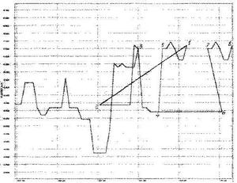

Энергия времени


Что, казалось бы, общего между понятиями времени и
энергии. Время мы связываем с последовательностью событий и часами, а с
энергию – с теплом и движением. Это мы условились за единицу времени
взять длительность одного оборота Земли вокруг своей оси, назвав её
сутками, 1/24 часть суток назвали часом, 1/60 часа – минутой, а 1/60
минуты – секундой. Длительность обращения Земли вокруг Солнца назвали
годом. Мы сами также условились вести отсчёт времени от придуманного
нами момента рождения Христа (а в допетровские времена – от также
придуманного сотворения Мира). Люди приняли самый удобный
равномерный ход времени, одинаковый на всей Земле и даже во Вселенной. В
принципе можно бы договориться и о неравномерном ходе, скажем, ночью
время замедляется, а днем бежит быстрее, или летом действует летнее
время, а зимой - зимнее. Но тогда не было бы единого времени, мы не
смогли бы согласовывать свои действия и постоянно переводили часы.
Следовательно, время – это что-то условное, необъективное,
нематериальное, а зависящее от нас. Тем не менее, многие ученые
энергетические проблемы человечества предлагают решить за счет времени.
Время у них стало своеобразным видом топлива. «Научных» обоснований
этого сколько угодно.
Прежде всего, по теории относительности А. Эйнштейна время является
четвертой координатой пространства, а раз пространство может работать
(см. нашу публикацию от 20.06.2012), то чем хуже время? Во-вторых, время
живёт и развивается, о чём свидетельствуют, например, книги знаменитого
теоретика Хокинга «Краткая история времени» [1] и журналиста
Баландина «Истинная история времени» [2]. Согласно Хокингу, время может
течь в направлении расширения Вселенной (космологическая стрела), в
направлении возрастания энтропии (термодинамическая стрела) или в
направлении от прошлого к будущему (психологическая стрела). А течет
оно, оказывается, не плавно, а прыгает и скачет вперёд или назад. По
Торну [3] время можно складывать как тряпку и перепрыгивать с одной
складки на другую, оказываясь в далёком прошлом или будущем. Академик
РАН А.М. Черепащук за управление временем был удостоен Государственной
премии России 2009 г. Следовательно, считают некоторые, время живёт и
скачет, и поэтому, как всё живое, должно обладать энергией.
Открытие превращения времени в энергию сделано в СССР и относится к
чисто нашим научным достижениям. В 1956 году профессор Пулковской
обсерватории Н.А. Козырев заявил о возможности «использования потока
времени для совершения работы» [4 – 6].
Н.А. Козырев (1908 – 1983) в 1930-е годы работал научным сотрудником
Пулковской обсерватории. Он увлёкся развивавшейся аббатом Леметром идеей
Большого взрыва как Начала Вселенной, и начал пропагандировать её среди
сотрудников. Теория Большого взрыва, ставшая сейчас основой космологии,
тогда считалась противоречащей марксизму-ленинизму. Поэтому Военной
коллегией Верховного суда СССР Козырев был осуждён по ст. 58 УК
(антисоветская пропаганда) на 10 лет с конфискацией имущества. Наказание
отбывал на Таймыре под Норильском, но не исправился, а вёл разговоры о
Большом взрыве среди заключенных. Поэтому в 1942 г. приговорён к высшей
мере наказания. Однако в тот момент на Таймыре не было
расстрельной команды, и суд изменил меру наказания на новые 10 лет.
После окончания войны Козыреву снова повезло – в Пулковской обсерватории
не оказалось грамотных научных сотрудников и он был условно освобождён
по ходатайству астрономов. В 1956 году пришла хрущёвская реабилитация, и
бывшие политические заключенные стали нашими героями. Воспрявший
Козырев сразу сделал множество великих открытий: действующие вулканы на
Луне, силы Козырева, зеркала Козырева для приёма и передачи
телепатических сигналов и др. А его главное открытие – превращение
времени в энергию! «Комсомольская правда» даже задавала вопрос – а могло
ли такое открытие быть сделано у них, в мире нищеты, голода и
эксплуатации. И отвечала, что нет. Как рассказывал сам Козырев,
превращение времени в энергию он открыл, отбывая наказание в лагерном
карцере: первое время там было очень холодно, затем становилось теплее, а
через несколько суток – совсем тепло. Так как баланда калорий не
давала, тепло могло придти только из времени. Там же он понял и почему
горят звёзды – потому что долго живут на небе. «Комсомолка» была права –
у них нет таких холодных карцеров, как у нас на Таймыре!
О великих достижениях советского учёного много писали наши газеты.
Восторженную статью о Козыреве написала известная своей «Ленинианой»
советская писательница, член-корреспондент АН Армении, корреспондент
армянского радио Мариэтта Шагинян [7]. «Радостно сознавать, -
пишет она, -что в нашей стране ему дадут все возможности спокойно
думать дальше и терпеливо ставить необходимые опыты, понимая их
трудность, необычность самой теории и колоссальное значение для науки
уже одной постановки вопроса о природе времени, уже одного внесения его в
порядок для передовой советской науки». И о времени: «Может ли оно само
по себе, может ли только один ход его, так диалектически-противоречиво
взаимодействующий с пространством, быть вечным источником порождения
энергии, убивающим энтропию и опрокидывающим второй закон термодинамики?
Да, отвечает Козырев».
После таких публикаций наши ведущие академики были вынуждены извиняться перед заграницей в газете «Правда» [8].
Аналогичное козыревскому открытие энергии времени сделал и второй
знаменитый советский лжеучёный академик А.И. Вейник [9]. Он ввёл частицы
времени «хрононы», и «хрональное вещество» даже экспериментально
находил на местах приземления НЛО. Более того, хрональное поле Вейник
использовал на практике, облегчая плавление металла и улучшая его
структуру. В результате «Термодинамика» Вейника была изъята из библиотек
и магазинов и публично сожжена как в средние века. Впоследствии автор и
сам отрекся от своих трудов и даже принял православие.
Использует «хрононы» на практике также уже упоминавшийся нами в статье о
пространстве академик множества АН, лауреат около сотни орденов и
медалей, десятка премий В.П. Гоч. Он продает доверчивым гражданам
восстановитель времени «Байк», временной преобразователь «Лальжи», метод
временной гармонизации и т.п. [10]. Тем самым он доказал, что время
может давать не только энергию, но также деньги, звания и славу.
Экспериментальное исследование времени провёл к.т.н. В. Савостьянов
[11]. Он просмотрел записи самописцев с датчиков, установленных на
гироскопах мощной ракеты-носителя, и на плавных кривых в нескольких
случаях обнаружил скачки вперёд или назад на 0,15 – 0,21 секунды,
происшедшие в момент запуска двигателя. По его словам, при этом
происходило «взаимное расхождение пространства и времени на участках
2 - 3 и их схождение в точках 3», «влетели в будущее в точке 6 и
вернулись в настоящее в точке 7», а на участке 7 - 8 «прошлое попало в
настоящее» (см. рис.). Получалось как в песне:
И я не понимаю иногда,
где первое мгновение, где последнее.
Обычный человек сказал бы, что от вибраций прыгало перо самописца или
где-то был ненадёжный контакт, но учёный делает вывод «о влиянии на
течение времени выделяемой мощными ракетными двигателями энергии». После
такого вывода устранять неполадку стало не нужно, а ракета пусть
падает!

Савостьянов делает вывод, что «пространство и время обладают упругостью». При ударе они сжимаются как пружины, а когда разжимаются, то действуют силы времени. Так автор экспериментально «подтвердил» силу времени и возможность совершения им работы.
Раз время живет, прыгает и скачет, как лошадь, то почему бы его не заставить работать? - Ведь лошади-то испокон веков работают на человека. Этой идей и пользуются изобретатели временной энергетики.
Инженер Ю.М. Кунянский из г. Люберцы МО предлагает создать машину времени, которая не только вырабатывает энергию, но и служит безопорным движителем [12]. Машина позволяет очень быстро слетать на дальние галактики, а навестив инопланетян, встать на выработку электроэнергии для землян. «Схематически машина времени проста» - пишет автор. Это шар, содержащий несколько радиодеталей – трансформатор, магнетрон, детекторный радиоприемник. При запуске на корпусе шара воспроизводят электромагнитный коллапс подачей высокого отрицательного напряжения. «Электроэнергию, я полагаю, – пишет Кунянский - снимать там, где зарождается ребенок у женщины, а мужское начало при этом уходит в бесконечность». 20.04.2001 автор докладывал о своем детище в Российской академии наук на Ленинском проспекте Москвы и получил положительную оценку ученых. В заключении РАН отмечается: «Эксперимент необходим, и при получении положительного результата открываются перспективы в области энергетики и летательных аппаратов». Значит, теоретическая возможность вечных двигателей и безопорных движителей финансируемой государством академией не отвергается.
За свой проект Кунянский в 1991 году просил один миллион рублей, сейчас – не знает, а завтра – будет больше. Может кто-то рискнет и купит? Спешите!
Идею Козырева недавно развил к.т.н. доцент Алтайского технического университета Е.Н. Авдеев [13]. По его мнению, механика Ньютона неверна, так как не учитывает «силы времени», которые «способствуют извлечению из пространства энергии времени». Оказывается, время имеет два аспекта: во-первых, это интервал Dt между двумя событиями, а во-вторых, что открыто автором, время dt отражает «процесс обмена энергией времени между нашим материальным миром и существующим в Космосе, но неведомым науке источником энергии». При dt > 0 происходит извлечение энергии времени, а само время замедляется. В случае отрицательных значений dt идет «отток энергии времени из материального мира и его возвращение обратно в пространство», время ускоряется. За счет такого рода перетеканий туда-сюда одновременно изменяется и количество материи во Вселенной.
Из времени, согласно Авдееву, берут энергию кавитационные теплогенераторы и пульсирующие реактивные двигатели. По его взглядам это вовсе не вечные двигатели, как считают ученые, так как их КПД, с учетом подпитки временем, меньше 100 %.
Даже школьнику ясно, что энергия – это характеристика движения материи, реального (кинетическая) или возможного (потенциальная). Чтобы получить полезную работу или тепло, нужно отнять часть реального или потенциального движения у материального тела. Время же не является материей, и у него ничего не возьмёшь, так как ничего нет. Ещё Аристотель писал, что «время не есть движение, но не существует без движения». Поэтому временные вечные двигатели принципиально невозможны. Следует добавить также, что их авторы не учитывают экологии. Вблизи работающего двигателя время должно замедляться и он будет съедать наши минуты, часы, да и нашу жизнь. Более того, при неэкономном расходовании дармовой энергии время может пойти вспять и отбросит нас куда-нибудь в каменный век. Так стоит ли после этого заниматься превращением времени в энергию?
Опять мы не нашли надёжного и хотя бы в принципе способного работать источника энергии будущего. Поэтому рассмотрим новые предложения.
1. Стивен Хокинг. Краткая история времени. С.-Петербург, Амфора, 2007
2. Рудольф Баландин. Подлинная история времени. М., Яуза-Эксмо, 2009
3. К. Торн. Черные дыры и складки времени: дерзкое наследие Эйнштейна. М., Физматлит, 2007 и 2009
4. Н.А. Козырев. Причинная или несимметричная механика в линейном приближении. Пулково, ГАО АН СССР, 1958
5. Н.А. Козырев. Астрономические наблюдения посредством физических
свойств времени. Междунар. симпоз. «Вспыхивающие звёзды» (Бюракан,
1976). Ереван, 1977, с. 168 – 179
6. Н.А. Козырев. Избранные труды. Ленинград, ЛГУ, 1991
7. М. Шагинян. Время с большой буквы. Литературная газета, 3 ноября 1959 г.
8. Л.А. Арцимович, П.Л. Капица, И.Е. Тамм. О легкомысленной погоне за научными сенсациями. Правда, 22.11.1959
9. А.И. Вейник. Термодинамика. Минск, Вышэйшая школа, 1968
10. В.К. Селищев, В.П. Гоч. Устройства концентрации энергии (УКЭ). Рекламный проспект. М., 2007
11. В. Савостьянов. Ракетно-временные парадоксы. Инженер, 2012, № 1, с. 18 – 19
12. Ю.М. Кунянский. О машине времени. Изобретательство, 2008, т. VIII, № 3, с. 41 – 44
13. Е. Авдеев. Общий закон механики, закон сохранения количества
движения, тяга пульсирующего реактивного двигателя и энергия времени.
Инженер, 2008, № 6, с. 20 – 23